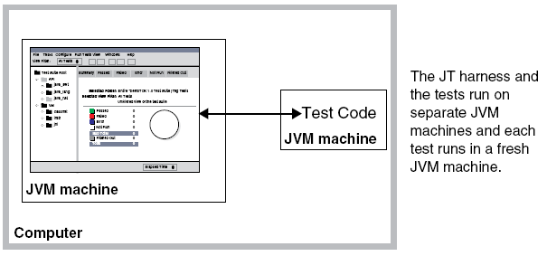
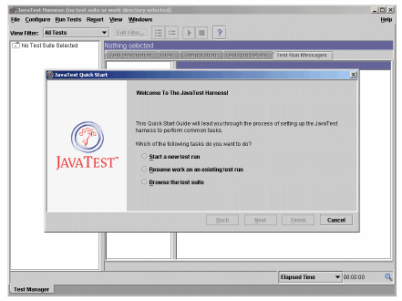
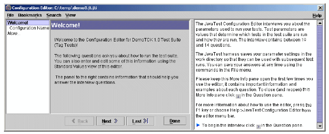
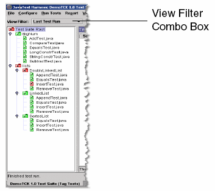
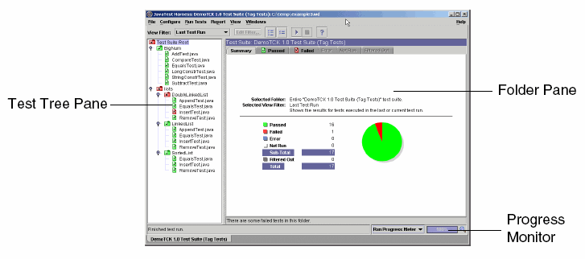
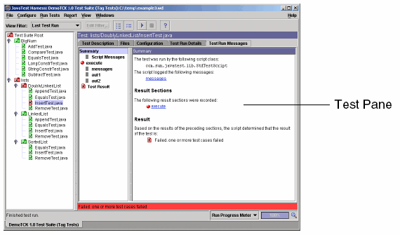
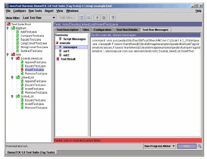
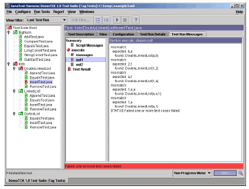

JT Harness Tutorialfor JT Harness Version 4.x |
This tutorial introduces you to the JT harness version 4.4.1 GUI and some
basic underlying concepts. The tutorial instructions have you run a
very simple test suite called Demo Test Suite that is included in the
examples directory. Demo Test Suite contains 17 tests that test the
functionality of some very simple demo APIs.
This tutorial describes how to:
The tutorial should be run using version 6.0 (or later) of the Java™ Platform, Standard Edition (Java SE) on either the Microsoft Windows (Win32) platforms, or on the Solaris™ Operating System.
NOTE: Unless otherwise indicated, all examples in this book use UNIX style command prompts and file separators.
To keep things simple, these instructions show you how to run both the JT harness and the tests on the same system in different virtual machines for the Java platform (JVM™ machines). The following diagram illustrates this:

Figure 1: JT Harness and Tests Running on Same System1
At a command prompt, enter:
java -versionexamples/demots
the current directory.
The directory jt_install is the directory into which you installed the JT harness software.
At a command prompt enter:
java -jar lib/javatest.jar -newDesktop
Note: The -newDesktop option is used here to
ensure that the JT harness starts up exactly as described in
these instructions. Under normal circumstances you should not use
this option because you will lose information that the harness saved
about your previous session. For information about JT harness options,
see the JT harness online help.
The JT harness starts and displays the Quick Start wizard window:
Figure 2: The JT Harness with QuickStart Wizard
The Quick Start wizard leads you through the basic steps required to start running the test suite.
Choose "Start a new test run", and click Next
Click the Next button (accept the default).
Choose "Create a new configuration", and click Next
The JT harness uses the work directory to store information and
to write test results. Click the Browse button to activate a file
chooser. Use the file chooser to create a work directory. Be sure to
create the work directory in a convenient location outside of the test
suite directory (demots). Click Next.
Click the Finish button to complete the Quick Start process. The configuration editor window starts automatically.
Because the "Start the configuration editor" checkbox was checked in the last panel of the Quick Start wizard, the configuration editor starts automatically.
You use the configuration editor to configure the information required to run the test suite. As shown below, the configuration editor consists of three panes and a menu bar:
Figure 3: JT Harness Configuration Editor
The left pane lists the titles of the questions you have answered, are currently answering, or that the editor deduces must be answered. The current question is highlighted.
The center pane displays the interview questions. You answer the questions by using controls such as text boxes, radio buttons, or combo boxes located below each question. Whenever possible, the editor deduces answers from your system configuration and includes them in text boxes, combo boxes, and radio buttons. You can accept these answers or provide other answers.
The right pane displays important information about each question, such as:
The following table presents the titles, answers, and information about each question that you must answer in the interview. There are 13 questions in the Demo Test Suite interview.
TABLE 1: Tutorial Interview Questions and Answers
| Question | Answer | Description |
|---|---|---|
| Welcome |
|
Briefly describes the purpose and function of the Demo Test Suite configuration interview. |
| Configuration name | Demo_TS | Names the interview file. |
| Description | Tutorial | Defines the configuration |
| How to Run Tests | On this computer | Runs both the JT harness and the tests on the same computer. |
| Java Virtual Machine |
The absolute path to the java command on a Win32 system. For example:
jdk_inst_dir or
jre_inst_dir |
Click the Browse button to activate a file chooser, or type the path directly in the text box. |
| Test Verboseness | Medium | Causes all executing tests to emit standard information messages. |
| Parameters... |
|
Introduces the section of questions that collect information about which tests to run and how to run them. |
| Specify Tests to Run? | No | Runs all of the tests. |
| Specify an Exclude List? | No | Specifies that an exclude list is not used for this test run. |
| Specify a Known Failures List? | No | Specifies that a known failures list is not used for this test run. |
| Specify Status? | No | Specifies that prior run status is not used to filter the test run. Feel free to try it on subsequent runs. |
| Concurrency | 1 | Specifies the default concurrency setting (1). |
| Time Factor | 1 | Specifies the default standard time out value for each test (1). |
| Congratulations! |
|
The configuration editor has collected all of the information it needs
to run the tests.
Click the Done button to save the interview. JT harness interviews are
saved to files that end with the |
Choose "Last Test Run" in the View Filter combo box located in the tool bar. This changes your "view" of the test tree so that you only see the results of the current test run. This is generally the view that most users prefer to begin with.
Note: When you change to the Last Run filter before you do a test run, the folders and tests in the tree turn to gray indicating that they are filtered out. This occurs because there are currently no results from a "last test run".
The test suite should begin to run. You will see activity in the test tree panel that indicates which tests are running. You can also watch the progress of the test run in the progress monitor on the bottom-right portion of the JT harness window and the pie chart in the Summary tab.
Click on different test folders to expand the test tree.
Figure 4: Expanded Test Tree
As tests complete, the tests and their folders change color to represent their state. The following table briefly describes the colors and their meaning:
TABLE 2: Folder/Test Colors and Their Meaning
| Color | Description |
|---|---|
| Green | Passed |
| Red | Failed |
| Blue | Error - The test could not be run properly. Usually indicates a configuration problem. |
| Gray | Filtered out - Due to a parameter setting (for example, it is on an exclude list), the test is not selected to be run. |
| White | Not run |
Folders reflect the state of the tests hierarchically beneath them. You know that the entire test suite passed if the test suite root folder is green. See the JT harness online help for more information.
Note: The test lists/DoublyLinkedList/InsertTest.java
intentionally contains errors and is supposed to fail as part of the
tutorial. If any other tests fail, check your answers to the
configuration interview.
Now that the test run is complete, you will use the Folder tabbed pane and Test tabbed pane portion of the JT harness to examine the results. You will also examine the output of the test that failed.
Note: The Folder tabbed pane and the Test tabbed pane occupy the same portion of the Test Manager window. The Folder tabbed pane is displayed when you choose a folder entry in the test tree and the Test tabbed pane is displayed when you choose a test entry in the test tree.
The Folder tabbed pane displays information about the tests in the selected folder.
Figure 5: The Folder Pane
Notice the statistics displayed in the Summary panel. It describes how many tests in the test suite passed, failed, had errors, and were filtered out.
Notice that the Summary panel changes to reflect the statistics for tests hierarchically beneath it.
This pane contains a list of the tests that passed during the test run.
This pane contains a list of the tests that failed during the test run (only one test in this case).
lists/DoublyLinkedList/InsertTest.java test in the
Failed tab.
This automatically selects the test in the test tree and changes the display from the Folder pane to the Test pane.
Note: To read more information about any of the panes, click on a tab to establish focus, and press F1 to activate online help about that pane.
The Test tabbed pane displays information about the selected test. The five tabs provide information about the test and information about the results of its execution.
Figure 6: The Test Pane
The following table briefly describes each tabbed pane:
TABLE 3: Test Pane Tabs
| Tab | Description |
|---|---|
| Test Run Messages | Displays messages generated during the selected test's execution |
| Test Run Details | A table of values generated during the selected test's execution |
| Configuration | A table of the configuration values used during the selected test's execution |
| Files | Displays the Java language source code and any other files related to the selected test |
| Test Description | A table of the test description values specified for the test |
Note: To read more information about any of the panes, click on a tab to establish focus, and press F1 to activate the online help about that pane.
This pane provides access to any messages generated by the JT harness or the test during execution. Notice that the various red icons indicate that the test failed.
The display on the right shows the command line used to run the test. Problems can often be debugged by examining how the test was invoked. In this case it was invoked correctly.
Figure 7: Test Messages
The display on the right shows errors reported by the test. The messages indicate that either the test or the API contain errors - in this case the test contains errors.
Figure 8: Logged Error Messages
The JT harness allows you to "exclude" tests from a test suite
by specifying an exclude list file. This section shows you how
to use the quick set mode of the configuration editor window to
specify an exclude list that includes
lists/DoublyLinkedList/InsertTest.java. Tests that are
excluded are not executed during test runs, and though they are still
displayed in the test tree, their status is not reflected in the
pass/fail status of the test suite.
The configuration editor window opens directly to a panel that allows you to specify an exclude list. This quick set mode allows you to quickly change values that change frequently between test runs. These values are also referred to as standard values. Note that standard values can also be changed using the configuration editor window in question mode.
This activates a tool with which you can specify a set of exclude lists.
This invokes a file chooser with which you can specify an exclude list. The current directory of the file chooser should be the directory in which you started the JT harness. If it is not, please navigate to that directory.
Double-click on the lib directory entry in the file chooser.
demo.jtx entry in the file chooser and click Select.
Notice that the exclude list (demo.jtx) is added to the Exclude Lists
text box.
Click Done in the configuration editor.
The Current Configuration filter shows which tests are selected and filtered out in the configuration, in effect a filter that shows which tests will be run next, as opposed to the Last Test Run filter which shows the tests that were run.
Notice that the icon for the for InsertTest.java entry in
the Test tree changes from red to gray. This indicates that the test
has been filtered out and will not be executed. Also notice that the
Test Suite Root folder has changed from red to green, indicating that
all the currently selected tests have passed.
You can use the JT harness to generate an HTML report that describes the results of the test run. All of the information contained in the report is available from the GUI; however, the following steps describe how to generate and browse a report that describes the test run done in the previous sections of this tutorial.
The Create a New Report dialog box opens.
If you wish to use a file chooser to specify the directory, click on the Browse button.
The reports are generated and you are asked whether you want to view the report.
The reports are displayed in the JT harness report browser window. Scroll through the report and follow the various links to view data about the test run.
Note: If you wish to print the report, you can open the report in your favorite web browser and print it from there.
This tutorial touches only on the core functionality of the JT harness GUI. Please continue to explore additional functionality on your own. Also, please consult the online help for information about all of the JT harness features.
1. It is also possible to run the JT harness and the tests on separate systems using the JT harness agent.
Copyright © 2002, 2011, Oracle and/or its affiliates. All rights reserved.